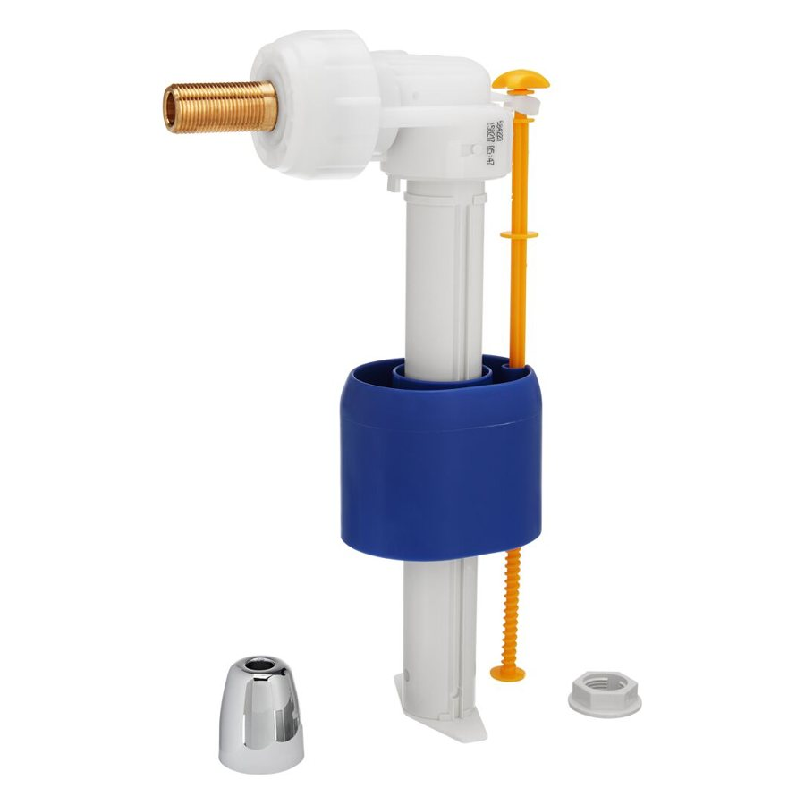
参考图片: toom · toom Baumarkt. 仅示意产品类型，并非中国制造商的产品。
马桶水箱维修套装：双冲水排水阀和进水阀
适用于连体水箱的完整冲水机构：双按钮配排水阀和侧进水阀。
技术参数
| 排水阀 | 双冲水，双按钮，顶置按钮 |
|---|---|
| 按钮 | 据商品页直径60毫米 |
| 进水阀 | 侧进水 |
| 结构 | 两件式，规格4英寸 |
| 可调性 | 据供应商称可OEM/ODM；通过样品测试确定安装高度和冲水量 |
| 厂家质保 | 据商品页为5年 |
| 包装 | 塑料袋（商品页） |
| 产地 | 浙江余姚（商品页） |
内部
行程城市内暂无制造商——可在当地（批发市场、展会）询价，或从归档中启用制造商。
更多
据前期筛查，Kaufland（进水阀7.90欧元）和Bauhaus（12.90欧元）以及eBay（双冲水维修套装，搜索结果约14.99欧元）的单价更低。 因此工厂价与零售价之间的差距被夸大：可比的成套商品（eBay双冲水维修套装，搜索结果约14.99欧元）明显低于Hornbach的两件之和。
- 到岸成本
- €3.26
- 销售价（净价）
- €22.11
- 利润率
- €18.85 · 85.3%
- 中国目标价
- €13.71
- 相比德国采购节省
- 87.5%
- 最小起订量
- 2,000件
- 价格条款
- Listing
每件，净价. 中国价格为挂牌价（未议价）。运费、关税和手续费为估算值；进口增值税可作为进项税抵扣。 假设：按产品组计运费，手续费 3%，售价比德国市场价低 15%，目标利润率 25%。
产品描述
该套装用于更换马桶水箱内磨损的内部机构：带双冲水按钮（大冲、小冲）的排水阀，以及带浮球的侧进水阀。
更多
无需更换陶瓷件即可修复漏水水箱、持续流水和损坏的密封件，并降低用水量。买家看重尺寸适配（排水口、3/8英寸进水接口、安装高度）、密封胶圈可靠、固定件不锈蚀和冲水量可调。进水阀作为接触饮用水的部件，须满足德国对饮用水接触塑料的要求。
海关
| 海关编码 | 84818099 |
|---|---|
| 关税税率 | 2.2 % |
标准与标识（德国/欧盟）
EN 14055马桶和小便器冲洗水箱：要求和试验方法（密封性、冲水量）EN 1717防止饮用水污染（进水阀的防回流保护）KTW-BWGL (UBA)接触饮用水的塑料及有机材料评估依据(EC) 1907/2006REACH：SVHC信息义务及限制（附件XVII）(EU) 2023/988GPSR：欧盟责任人、可追溯性、警示信息
内部 · 备注
电商潜力
依据（截至2026年11月2日）：Hornbach销售3/8英寸通用进水阀18.95欧元和DUAL水箱排水阀12.00欧元，OBI的Siamp通用进水阀17.99欧元、Geberit Unifill 29.99欧元；据前期筛查，通用进水阀在Kaufland为7.90欧元、在Bauhaus为12.90欧元，OBI的密封件套装从1.99欧元起，eBay有双冲水维修套装（一条搜索结果显示约14.99欧元）。
更多
易损件全年作为维修品购买，并与马桶或翻新项目交叉购买。风险：适配性（进水口、螺纹、安装高度）是退货的主要原因，因此店铺需提供尺寸和兼容性表；自来水管路部件在漏水时有责任风险。
需向供应商索取
- 向供应商索取适配表：排水口（2或3英寸）、安装高度、3/8英寸进水螺纹，以及与目录中Huida连体水箱（参照产品23-wc-keramik）的兼容性。
- 索取密封性和冲水量检测报告（双冲水，EN 14055），以及按钮和密封件的耐久测试。
- 进水阀接触饮用水的证明：塑料和橡胶的KTW/UBA符合性，按EN 1717的防回流措施。
- 以套装形式包装，附德文安装说明、零件清单、GPSR标识和LUCID登记；需明确单位（每件为1套机构还是2个部件，商品页写的是“Piece”和“Two Piece”）。
- 企业证明：Honglei称员工107人、占地3,000平方米；产品页称1996年成立而企业资料为2014年，需澄清该矛盾并申请验厂。
- 先订购首批样品并做到货检验（密封性、缝隙、弹簧力），之后才下批量订单。
来源
商品页单位：1件（“两件式”指排水阀加进水阀为一个单元，需与供应商确认）。页面显示样品价0.50美元。备选Bath Friend H623（2.30至3.50美元，起订量500，https://bathfriend.en.made-in-china.com/product/aRgYhLXcbOVD/China-Factory-Direct-Two-Piece-Toilet-Cistern-Fittings-Flush-Fill-Valve-Repair-Kit.html）和Pro-Made（2.55至2.95美元，起订量100，https://promadetop.en.made-in-china.com/product/ULbYHufPTaVG/China-Complete-Bathroom-Toilet-Cistern-Fill-and-Dual-Flush-Valve-Fittings-Kit.html）。商品页标注的海关编码为3924900000。
搭配购买
卖家与本产品一起销售的配件、耗材和相关产品。
本类别其他产品
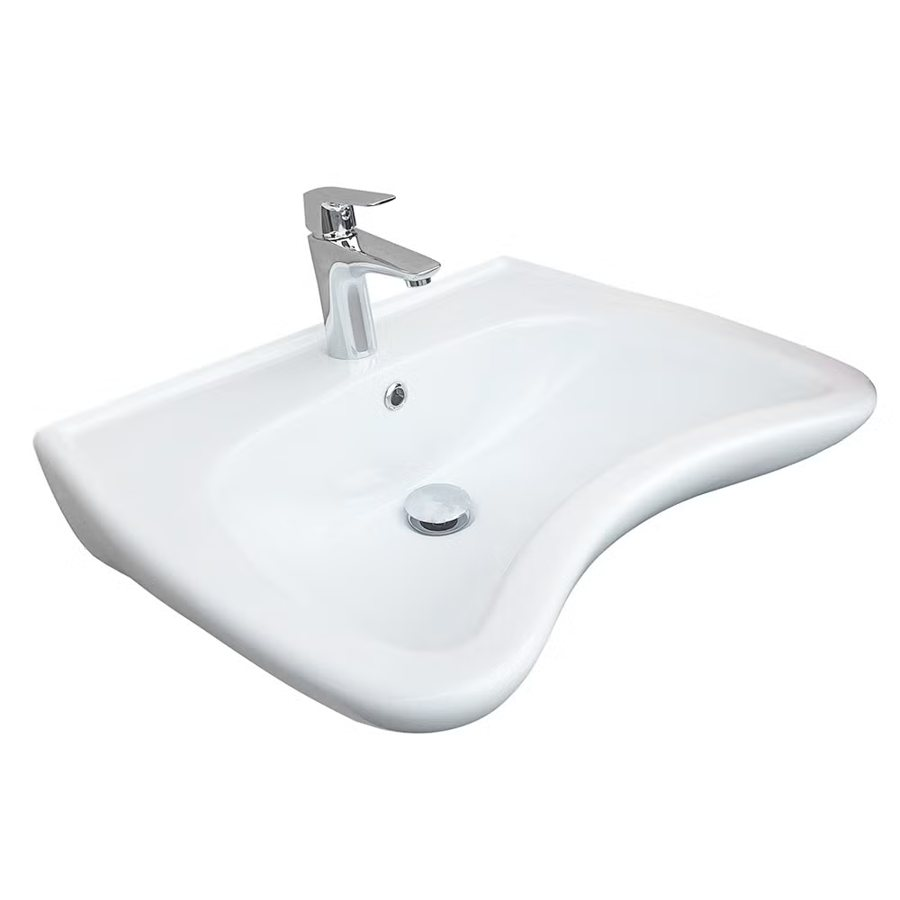
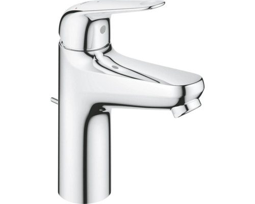
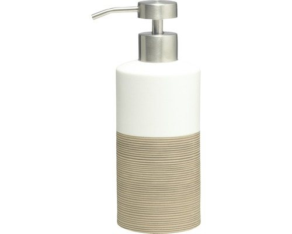
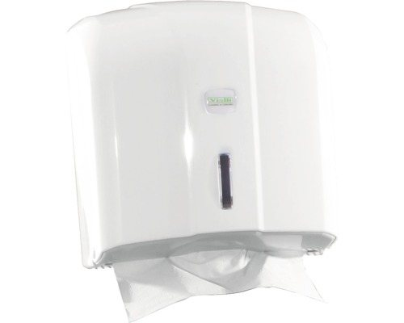
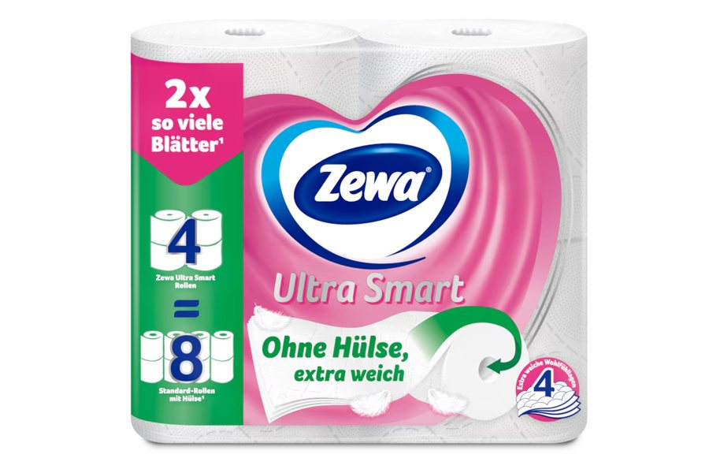
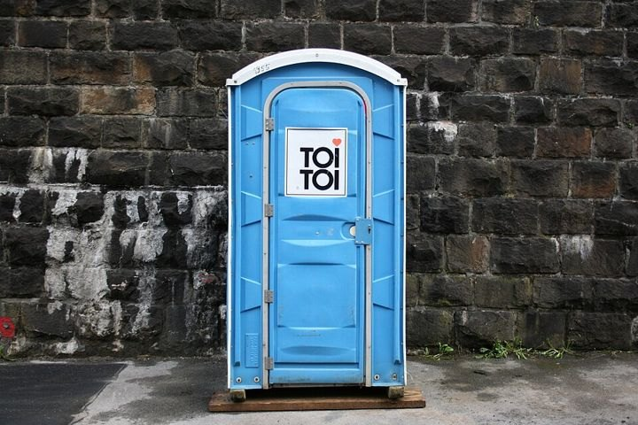
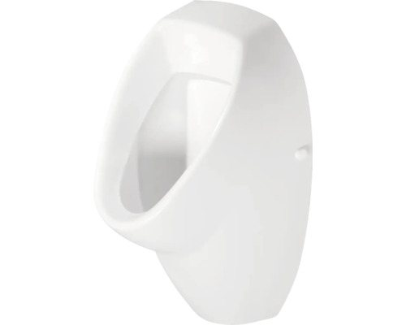
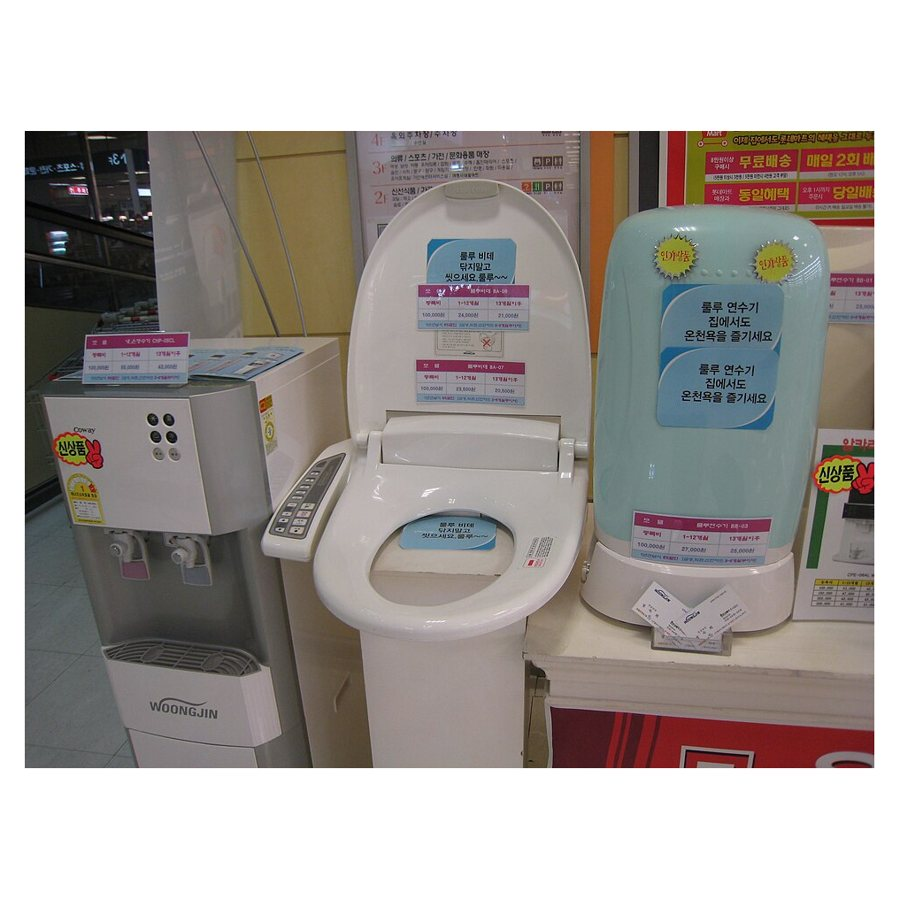
交叉销售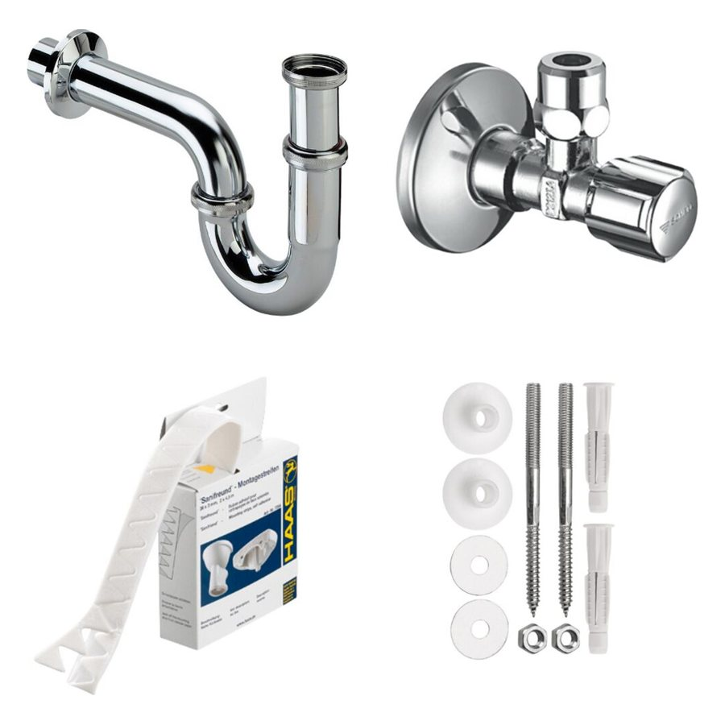
交叉销售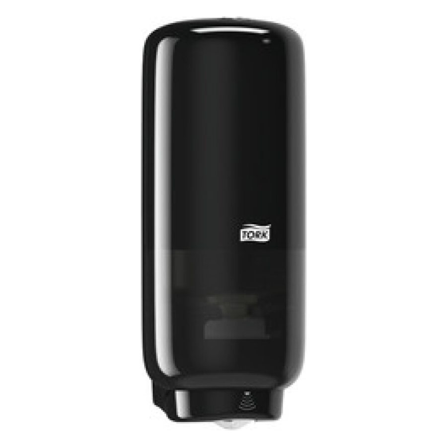
追加销售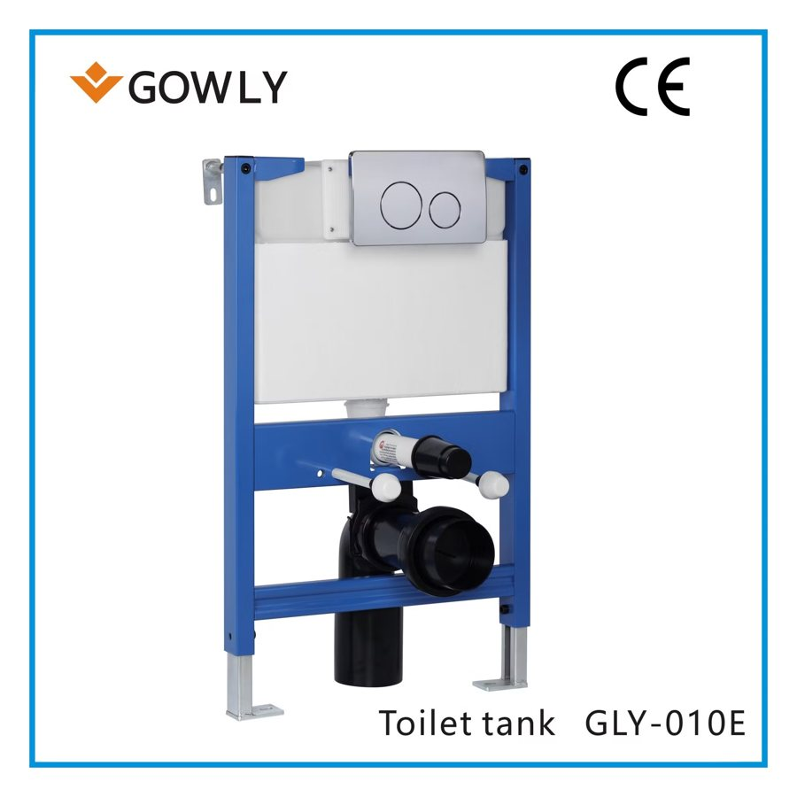
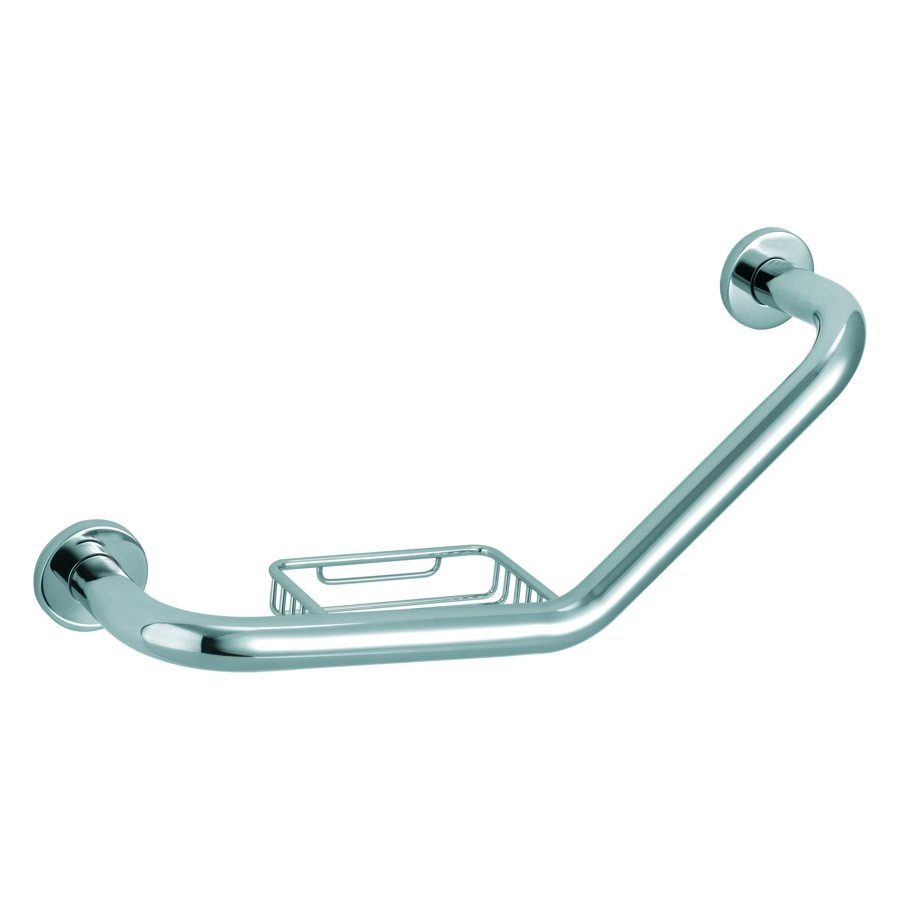
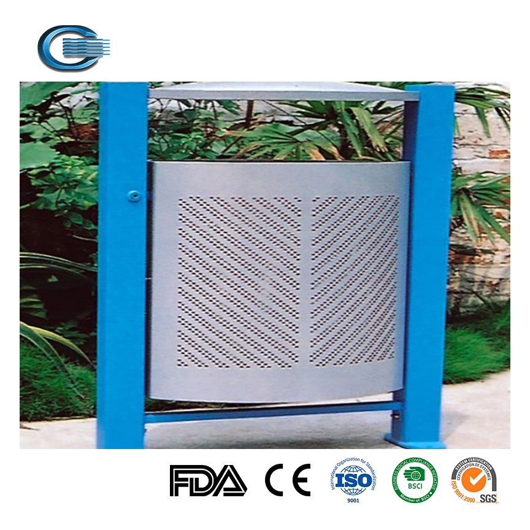
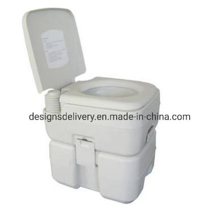
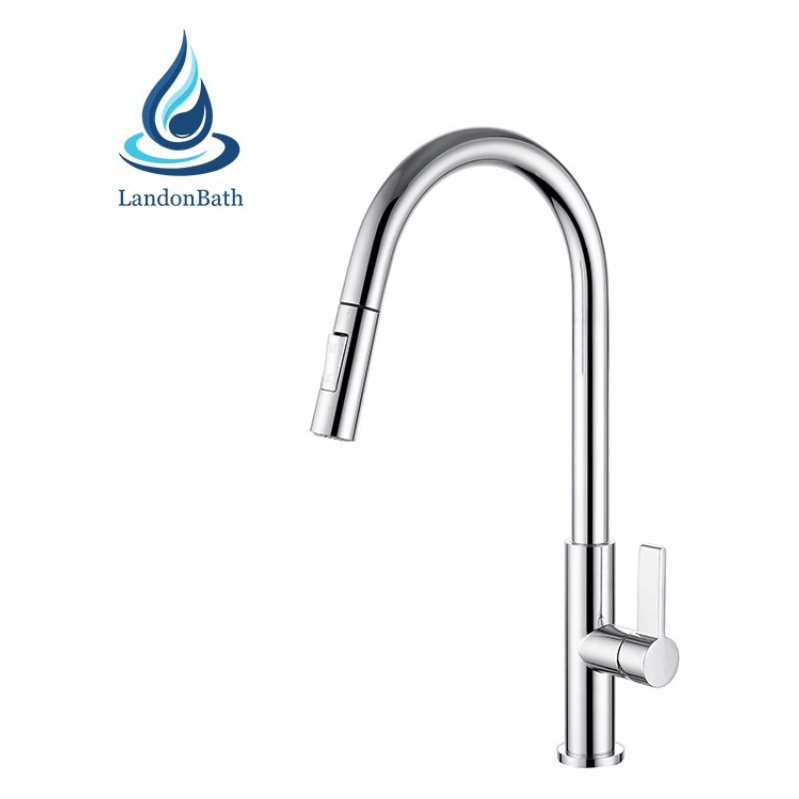
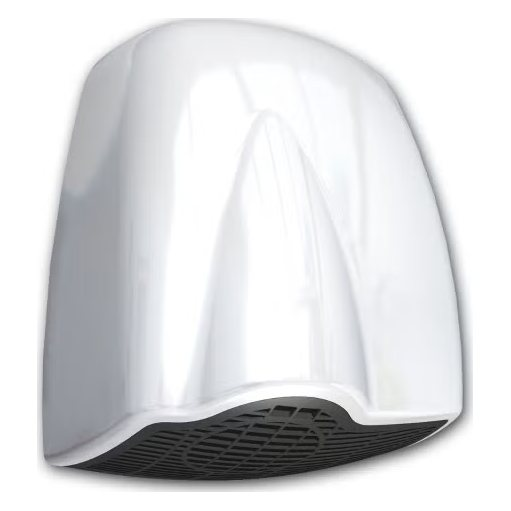
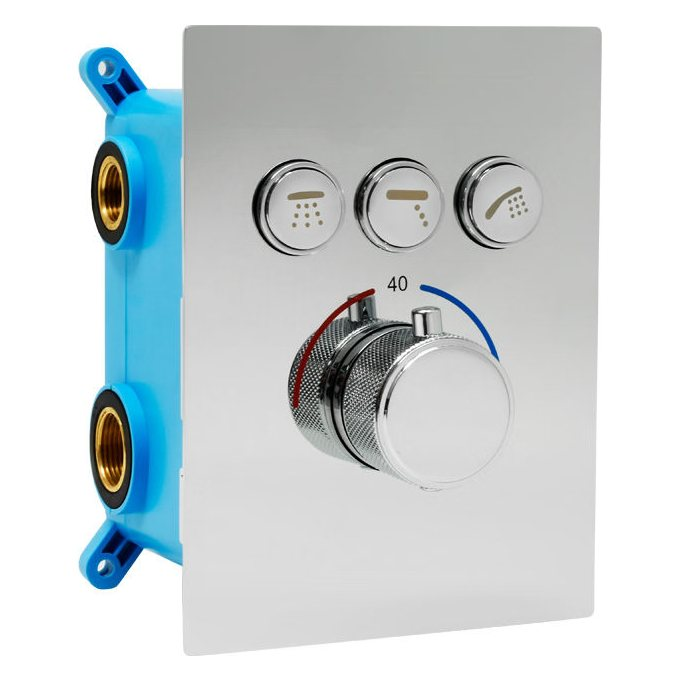
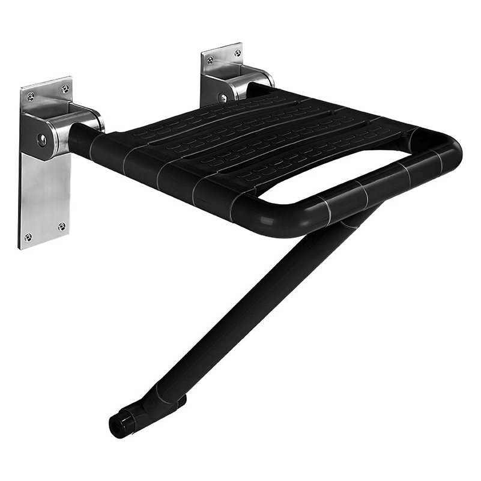